| time | topic |
|---|---|
| 3:40-4:00 | What is your plot testing? |
| 4:00-4:15 | Creating null samples |
| 4:15-4:45 | Conducting a lineup test |
| 4:45-5:00 | Testing for best plot design |
Creating data plots for effective decision-making using statistical inference with R
Dianne Cook
Monash University
Monash University
Session 2: Making decisions and inferential statements based on data plots
Outline
What is your plot testing?
What is your plot testing?
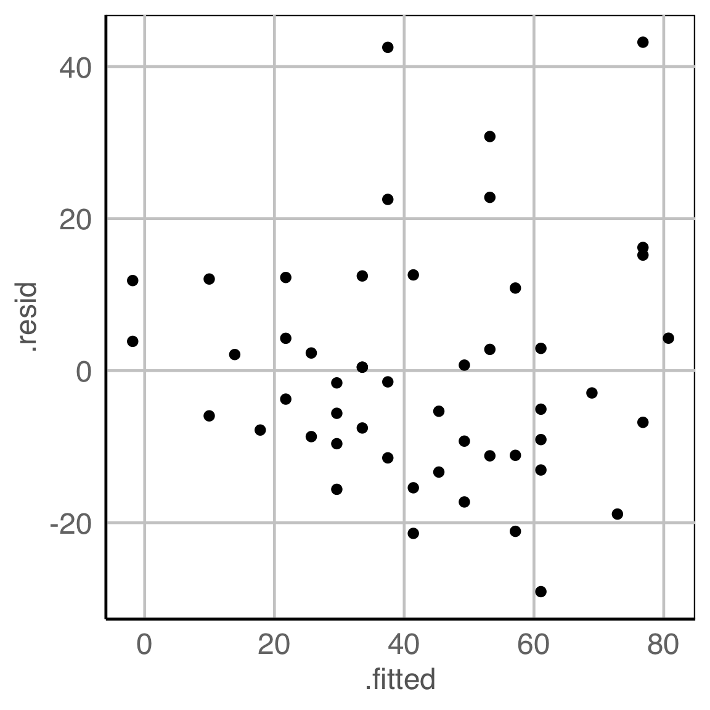
What do you see?
✗ non-linearity
✓ heteroskedasticity
✗ outliers/anomalies
✗ non-normality
✓ fitted value distribution is uniform
Are you sure?
What is your plot testing?
What is your plot testing?
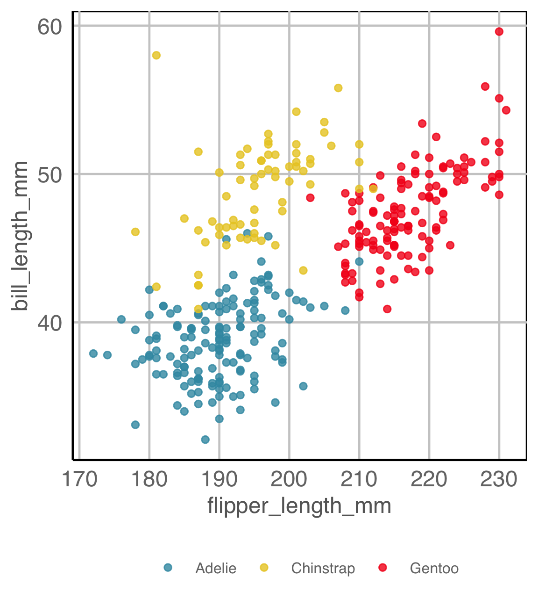
What do you see?
There a difference between the groups
✓ location
✗ shape
✓ outliers/anomalies
Are you sure?
Statistical thinking
- Because the plot is specified using a functional mapping of the variables, it is a statistic.
- The null and alternative hypotheses are indicated from the plot description.
- Applying the function to a dataset provides the observed value.
Null hypothesis, example 1
What is the null hypothesis?
There is no relationship between residuals and fitted values. This is \(H_o\).
Alternative hypothesis, \(H_a\):
There is some relationship, which might be
- non-linearity
- heteroskedasticity
- outliers/anomalies
Null hypothesis, example 2
YOUR TURN
What is being tested in each of these plot descriptions?
Distribution of VAR1 is ?
There is no relationship between VAR1 and VAR2. More specifically, the proportion of VAR2 in each level of VAR1 is the same.
There is no relationship between VAR1 and VAR2. Particularly, VAR2 is not dependent on VAR1 and there is no trend.
Creating null samples
Statistical thinking
Sampling distribution for a t-statistic. Values expected assuming \(H_o\) is true. Shaded areas indicate extreme values.
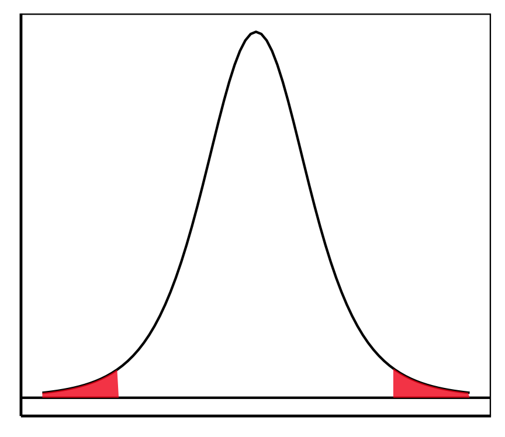
For making comparisons when plotting, draw a number of null samples, and plot them with the same script in the plot description.
Creating null samples, example 1

Creating null samples, example 2
\(H_o\): There is no relationship between residuals and fitted values.
How would you generate null samples?
Break any association by
- permuting residuals,
- or residual rotation,
- or simulate residuals from a normal distribution.
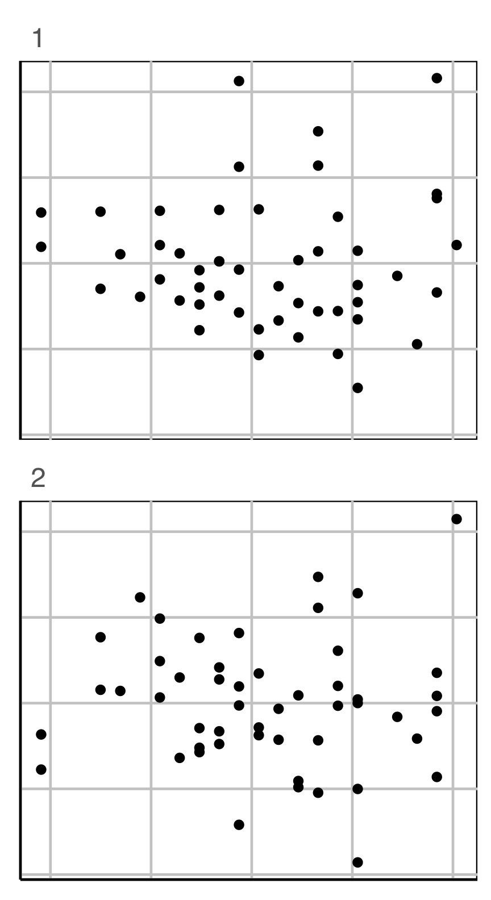
Conducting a lineup test
Steps
- Create a lineup of \(m-1\) null plots + 1 data plot, where the data plot is randomly placed among nulls. Remove any distracting information, like tick labels, titles.
- Ask uninvolved observer(s) to pick the plot that is most different. (May need to use a crowd-sourcing service.)
- Compute the probability that the data plot was chosen, assuming it is no different from the null plots. This is the \(p\)-value.
- Decide to reject or fail to reject the null.
Lineup example 1 (1/2)
Code
set.seed(241)
ggplot(lineup(null_permute("species"), penguins, n=15),
aes(x=flipper_length_mm,
y=bill_length_mm,
color=species)) +
geom_point(alpha=0.8) +
facet_wrap(~.sample, ncol=5) +
scale_color_discrete_divergingx(palette="Zissou 1") +
theme(legend.position = "none",
axis.title = element_blank(),
axis.text = element_blank(),
panel.grid.major = element_blank())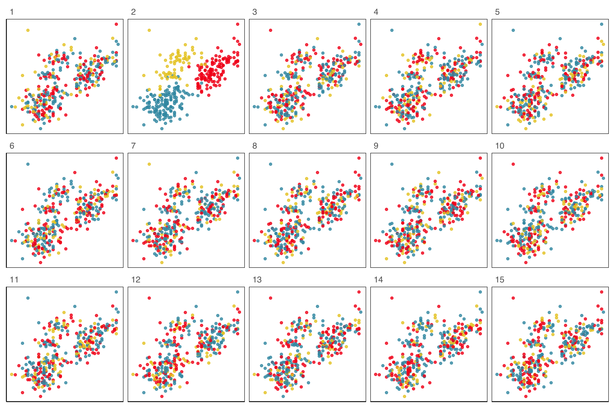
Lineup example 1 (2/2)
If 10 people are shown this lineup and all 10 pick plot 2, which is the data plot, the \(p\)-value will be 0.
Generally, we can compute the probability that the data plot is chosen by \(x\) out of \(K\) observers, shown a lineup of \(m\) plots, using a simulation approach that extends from a binomial distribution, with \(p=1/m\).
This means we would reject \(H_o\) and conclude that there is a difference in the distribution of bill length and flipper length between the species of penguins.
Lineup example 2 (1/2)
Code
data(wasps)
set.seed(258)
wasps_l <- lineup(null_permute("Group"), wasps[,-1], n=15)
wasps_l <- wasps_l %>%
mutate(LD1 = NA, LD2 = NA)
for (i in unique(wasps_l$.sample)) {
x <- filter(wasps_l, .sample == i)
xlda <- MASS::lda(Group~., data=x[,1:42])
xp <- MASS:::predict.lda(xlda, x, dimen=2)$x
wasps_l$LD1[wasps_l$.sample == i] <- xp[,1]
wasps_l$LD2[wasps_l$.sample == i] <- xp[,2]
}
ggplot(wasps_l,
aes(x=LD1,
y=LD2,
color=Group)) +
geom_point(alpha=0.8) +
facet_wrap(~.sample, ncol=5) +
scale_color_discrete_divergingx(palette="Zissou 1") +
theme(legend.position = "none",
axis.title = element_blank(),
axis.text = element_blank(),
panel.grid.major = element_blank())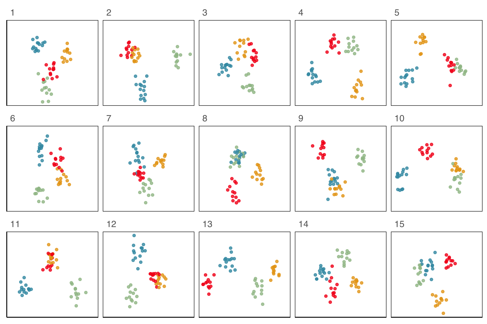
Lineup example 2 (2/2)
If 10 people are shown this lineup and 1 picked the data plot (position 6), which is the data plot, the \(p\)-value will be large.
This means we would NOT reject \(H_o\) and conclude that there is NO difference in the distribution of groups.
What is the \(p\)-value?
- Suppose \(X\) is the number of nandus out of \(n\) independent tosses.
- Let \(p\) be the probability of getting a for this coin.
- Hypotheses: \(H_0: p = 0.5\) vs. \(H_a: p > 0.5\).
Alternative \(H_a\) is saying we believe that the coin is biased to nandus.
Alternative needs to be decided before seeing data. - Assumption: Each toss is independent with equal chance of getting a nandu.
What is the \(p\)-value?
- Suppose I have a coin that I’m going to flip
- Experiment 1: I flipped the coin 10 times and this is the result:
- The result is 7 nandus and 3 tails. So 70% are nandus.
- Do you believe the coin is biased based on this data?
What is the \(p\)-value?
- Experiment 2: Suppose now I flip the coin 100 times and this is the outcome:
- We observe 70 nandus and 30 tails. So again 70% are nandus.
- Based on this data, do you think the coin is biased?
Calculate the \(p\)-value
Experiment 1 (n=10)
- We observed \(x=7\), or \(\widehat{p} = 0.7\).
- Assuming \(H_0\) is true, we expect \(np=10\times 0.5=5\).
- Calculate the \(P(X \geq 7)\)
Lineup \(p\)-value and power
Suppose \(x\) out of \(n\) people detected the data plot from a lineup, then the visual inference p-value is given as \(P(X \geq x)\) where \(X \sim B(n, 1/m)\), but
the assumption of independence is not strictly satisfied, if people are shown the same lineup. So the \(p\)-value is computed by simulation with
and the power of a lineup is estimated as \(x/n\). We’ll use this to compare the signal strengths for different plot designs. Stay tuned!
Lineup example 3 (1/2)
Which plot is the most different?
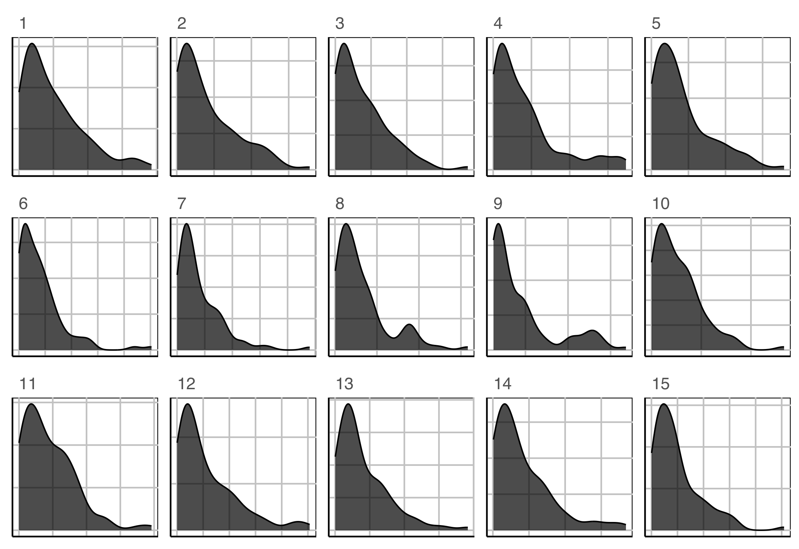
Lineup example 3 (2/2)
Plot description was:
In particular, the researcher is interested to know if star temperature is a skewed distribution.
\(H_o: X\sim exp(\widehat{\lambda})\)
\(H_a:\) it has a different distribution.
Lineup example 4 (1/2)
Which row of plots is the most different?
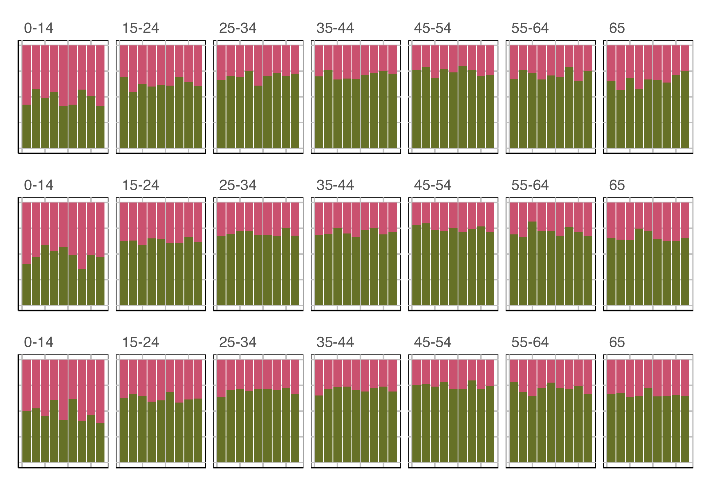
Lineup example 4 (2/2)
Plot description was:
\(H_o:\) Proportion of males and females is the same for each year, conditional on age group
\(H_a:\) it’s not
Practical considerations
- Testing can be done informally with the
nullaborpackage - For practical use, one should
- Create multiple lineups for a data plot, different positions, different nulls
- Show each to different groups of observers
- Compute \(p\)-value by combining results from each lineup.
- Crowd-sourcing services include: Amazon Mechanical Turk, prolific, Appen, LABVANCED.
YOUR TURN
Take a moment to look at the lineup function documentation. Run the sample code to make a lineup, eg:
or your own.
And then the different null sample generating functions: null_permute, null_lm, null_ts, null_dist.
Testing for best plot design
Steps
- Decide on plot descriptions, say two possibilities.
- Using the same data, and same null data create lineups that only differ because of the plot description.
- Show each lineup to two samples of uninvolved observers (one observer cannot see both lineups).
- Compute the proportion of each sample who identified the data plot, this is the signal strength or statistical power of each plot design.
- The plot with the greater value is the best design (for that problem).
If your birthday is between Jan 1 and Jun 30, CLOSE YOUR EYES NOW
No peeking!
Plot design example 1A
Which plot is the most different?
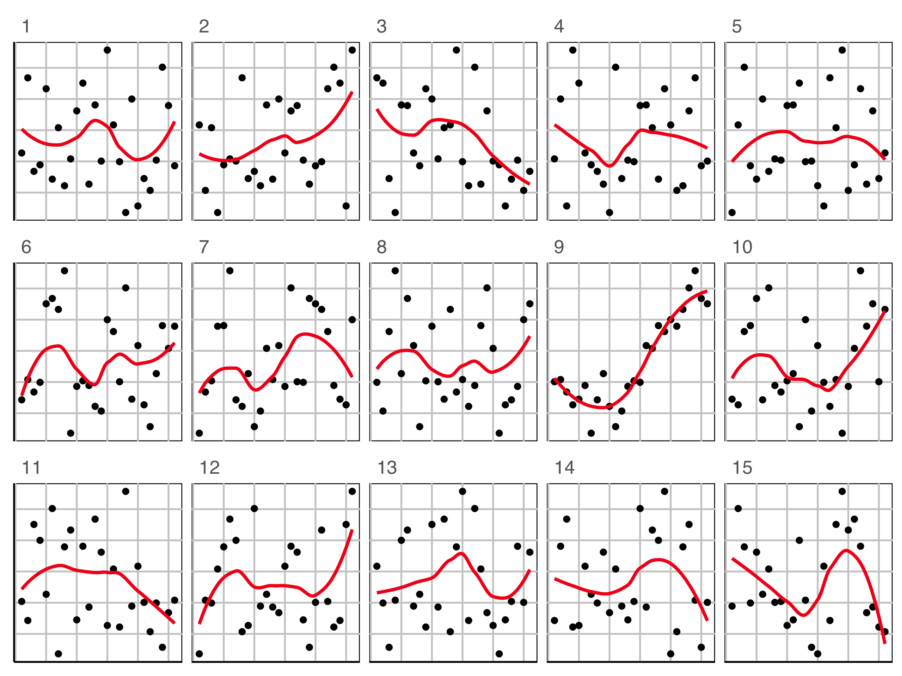
Plot design example 1B
Which plot is the most different?
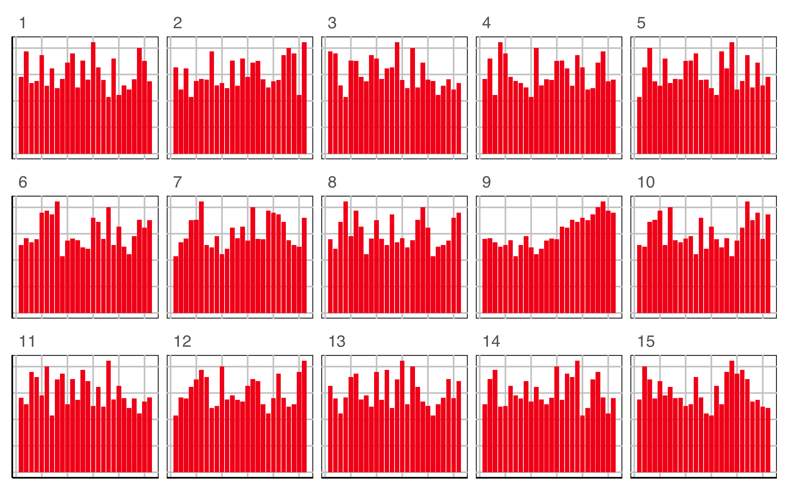
Plot design example 1
This is the pair of plot designs we are evaluating.
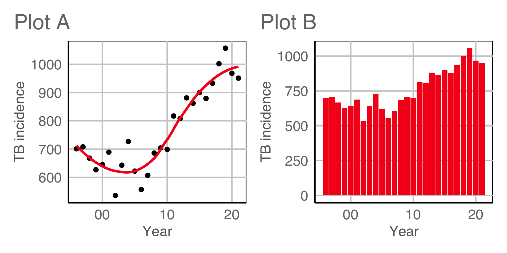Compute signal strength:
If your birthday is between Jul 1 and Dec 31, CLOSE YOUR EYES NOW
No peeking!
Plot design example 2A
Which plot is the most different?
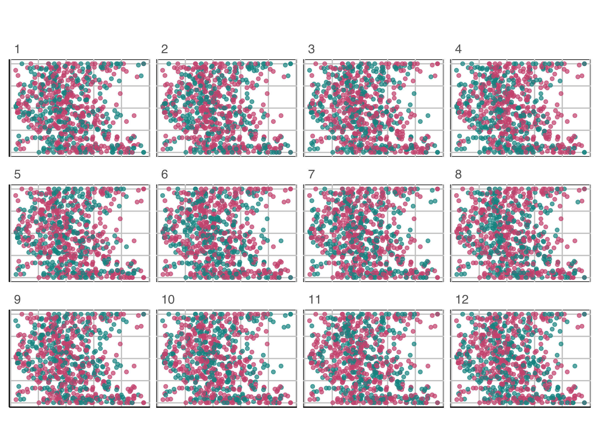
Plot design example 2B
Which plot is the most different?
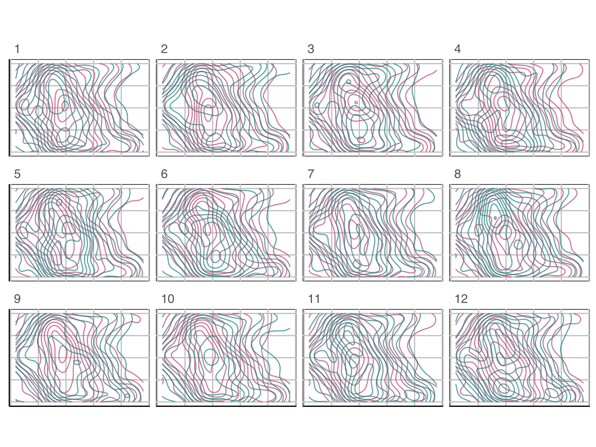
Plot design example 1
This is the pair of plot designs we are evaluating. Comparing the positions at which passes were made by both teams.
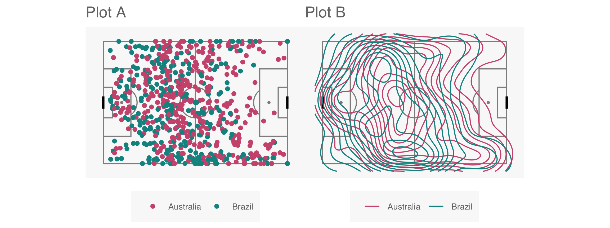Compute signal strength:
YOUR TURN
For the star temperature data, where we used this plot design
create a lineup with a different design, that you think might reveal the data distribution as different from null samples, better than the density plot. Possibilities could include geom_histogram, ggbeeswarm::quasirandom, lvplot::geom_lv.
Wrap up
References
- Wickham, Cook, Hofmann, Buja (2010) Graphical Inference for Infovis, IEEE TVCG, https://doi.org/10.1109/TVCG.2010.161.
- Hofmann, Follett, Majumder, Cook (2012) Graphical Tests for Power Comparison of Competing Designs, IEEE TVCG, https://doi.org/10.1109/TVCG.2012.230.
- Buja, Cook, Hofmann, Lawrence, Lee EK, Swayne, Wickham (2009) Statistical inference for exploratory data analysis and model diagnostics, https://doi.org/10.1098/rsta.2009.0120.
- Majumder, Hofmann, Cook (2013) Validation of visual statistical inference, applied to linear models, https://doi.org/10.1080/01621459.2013.808157.
- VanderPlas, Rottger, Cook, Hofmann (2021) Statistical significance calculations for scenarios in visual inference, https://doi.org/10.1002/sta4.337.

This work is licensed under a Creative Commons Attribution-ShareAlike 4.0 International License.